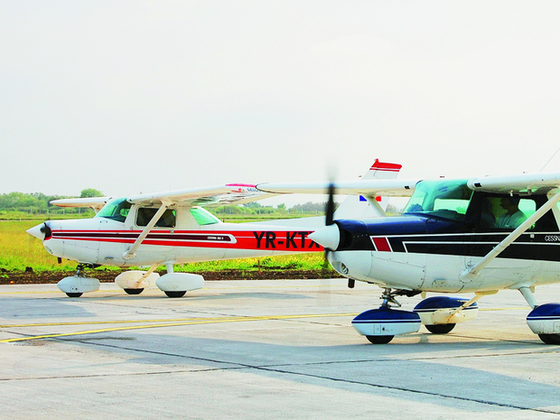
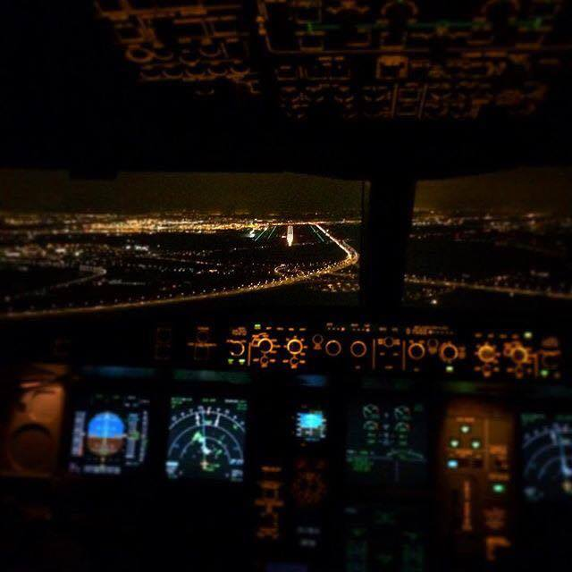
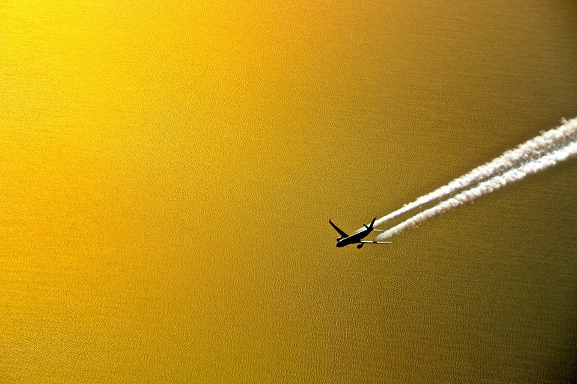
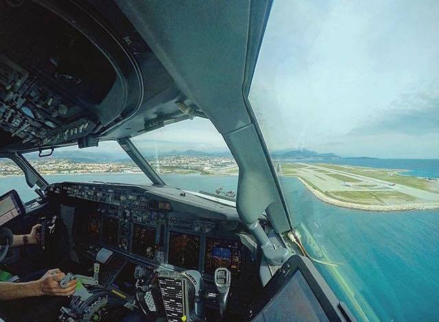
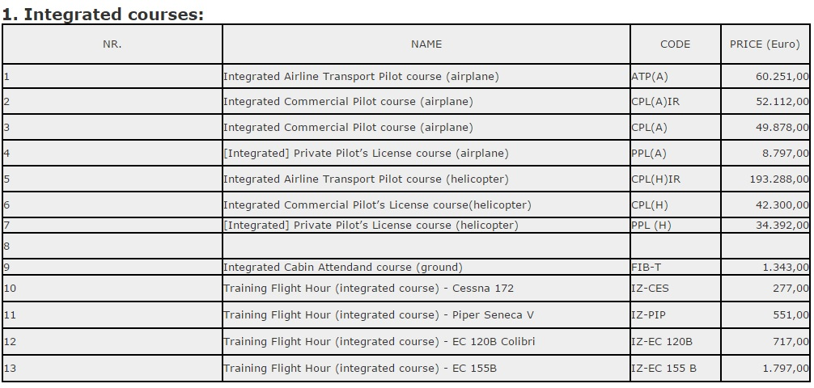
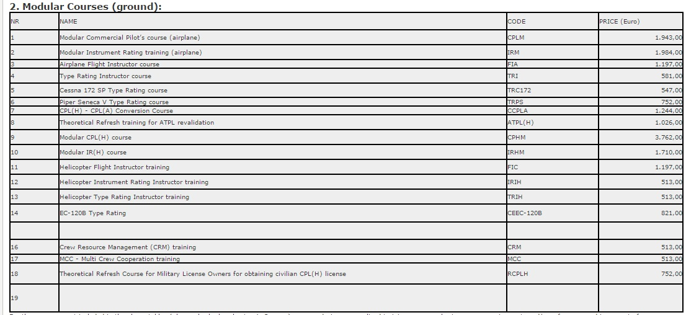

Intr-o scoala de piloti, aerul e aproape la fel de rarefiat ca la cateva mii de metri altitudine. Disciplinate si riguroase, cursurile pregatesc oamenii aceia calmi care ne anunta decolarea sau aterizarea si care castiga cat executivii din multinationale. Mai e loc pe piata pentru ei?
"Pilotul este un manager in avion", spune Dan Andrei, directorul scolii romanesti de pilotaj Carpatair Flight Training de la Timisoara.
Este prima lectie pe care Dan Andrei si colegii sai instructori de la scoala de aviatie din Timisoara o predau viitorilor piloti: aceea ca sunt responsabili de coordonarea unui intreg "arsenal" de comenzi si ca in mainile lor se afla, de cele mai multe ori, nu numai propriile vieti, ci si vietile unor zeci sau chiar sute de oameni.
In Romania exista momentan putine sanse pentru cei care doresc sa devina piloti comerciali si de linie. Dincolo de Scoala Superioara de Aviatie si de cateva scoli mai mici private, cea mai nou deschisa este Carpatair Flight Training, care a inceput cursurile in urma cu doi ani la Timisoara. Scoala a pornit la drum dupa ce compania aeriana Carpatair a decis sa investeasca in formarea de piloti de la zero, pentru a nu mai fi conditionata sa astepte absolventii Scolii Superioare de Aviatie din Romania sau sa depinda de piata internationala, unde pilotii primesc oferte din toata lumea, iar piloti licentiati pe tipurile de avioane cu care zboara Carpatair se gaseau din ce in ce mai greu. Asadar, conducerea Carpatair a deschis scoala unde au absolvit in doi ani 67 de piloti, dintre care a angajat deocamdata 3. Cum afla doritorii de noua scoala, cum isi platesc cursurile care nu sunt deloc ieftine si, nu in ultimul rand, unde se duc daca nu raman in staff-ul companiei de la Timisoara?
Sunt interesati in general pasionatii, iar informatia orala circula cu repeziciune extrema; avem de procesat zeci de aplicatii lunar, dar din cauza constrangerilor financiare ale candidatilor potentiali, numai o mica parte finalizeaza intentia. De altfel, din aceste motive cumulate, nici nu se organizeaza targuri de profil, cel putin in Romania", potrivit lui Dan Andrei. Scoala de aviatie de la Timisoara are in prezent atat cursanti romani, cat si straini, din Serbia si Republica Moldova. Carpatair a avut insa cursanti si din Statele Unite, Canada si Australia. Cei mai multi cursanti sunt orientati catre o cariera de pilot profesionist, manifestandu-si inca de la inceput dorinta de a se angaja in cadrul unui operator aerian dupa absolvirea cursurilor.
Inainte de a deveni pilot cu acte in regula insa, cursantii trec prin multe ore de studiu. In cadrul Carpatair Flight Training, programul de pregatire incorporeaza minimum 750 de ore de pregatire teoretica, circa 60 de ore de antrenament pe simulator, peste 160 de ore de zbor pe avion, toate acestea in aproximativ doi ani. De asemenea, programul de calificare pe tip de avion consta in inca 150 de ore de pregatire teoretica in cadrul companiei in care pilotul se angajeaza, exercitii practice dupa proceduri pentru situatii anormale si de urgenta, antrenamente pe simulator cu o durata de minimum 40 de ore si, ulterior, zbor necomercial pe avion si zbor de pregatire pe ruta cu durata de 150 de ore. "Este mult, este putin? Practica a demonstrat ca atat este necesar pentru ca operarea sa fie sigura", precizeaza directorul Carpatair Flight Training.
Dan Andrei sustine ca organizarea unei astfel de scoli nu este deloc simpla si ca inseamna, pana la urma, "ceea ce inseamna orice intreprindere greenfield a unui antreprenor".
Chiar daca investitiile initiale se recupereaza dupa multi ani, pilotii reprezinta in acest moment o necesitate sociala identificata, dupa cum o descriu fondatorii acesteia. Scoala de aviatie care functioneaza in incinta Aeroportului International Traian Vuia din Timisoara a "prins aripi" in urma unei investitii de 2 milioane de euro, investitie care a finantat achizitia unui simulator, doua aeronave Cesna si diverse lucrari pentru organizarea scolii. Insa, odata lansata, scoala a lucrat la capacitate maxima: "Prin scoala noastra, urmand diverse cursuri de formare, au trecut peste 90 de studenti-piloti", explica Dan Andrei. In prezent, aflandu-se in diverse stadii ale cursurilor de pilotaj, frecventeaza cursurile scolii 23 de piloti/studenti-piloti, diferenta de 67 fiind reprezentata de cei care au absolvit deja.
Programul de pregatire a unui pilot consta in mai multe etape, fiecare cu pretul ei: primul nivel, asa-numitul PPL (Private Pilot Licence), costa in cadrul scolii de aviatie Carpatair circa 9.000 de euro fara TVA. Pregatirea planificata pe durata a doi ani, pana la obtinerea licentei de pilot comercial ATPL (Air Transport Pilot Licence) il costa insa pe un viitor pilot circa 55.000 de euro.
La o cautare pe internet, zeci de forumuri din tara si din strainatate sunt pline ochi de tineri care vor sa devina piloti. Multi vor, putini ajung la cursuri, iar si mai putini reusesc sa obtina toate atestatele si sa ajunga sa zboare pentru o companie. Si, cu toate acestea, evolutia pietei aeriene din ultimii ani ii face pe multi dintre ei sa isi puna intrebarea: "Poti avea emotii ca ajungi somer cu licente de pilot de 100.000 de euro?".
De la inceputul anilor 2000, industria aeriana a avut o crestere record mondiala, in care au jucat roluri foarte importante dezvoltarea industriei low-cost si a companiilor asiatice. Ultimii doi ani au afectat insa grav industria transporturilor, mai multe companii intrand in faliment - precum SkyEurope sau MyAir -, iar altele intrand in ample restructurari. Cel mai recent exemplu in acest sens este operatorul aerian roman Blue Air, care a anuntat un plan de restructurare ce vizeaza, printre altele, concedierea mai multor angajati din echipajul de bord.
Cu toate acestea, mai exista regiuni pe glob unde inca se fac angajari, spun cei din domeniu. "Exista cerere mare de piloti in zona Asiei si a Orientului Mijlociu, cele mai dinamice din punct de vedere al dezvoltarii aviatiei civile in ultimii ani. Aici de fapt se impune o analiza structurala pentru ca in toata lumea este nevoie de piloti cu experienta (comandanti, instructori), insa este greu sa ajungi la acest nivel pentru ca sistemul de promovare este foarte riguros si impune un anumit nivel de pregatire pentru fiecare etapa care conduce la elitele de care este nevoie peste tot, de fapt", spune Dorin Ivascu, unul dintre cei doi asociati ai Regional Air Services, scoala de piloti de la Tuzla. Aceeasi viziune o impartaseste si Dan Andrei de la Carpatair, afirmand ca explicatia acestei cereri deosebite este faptul ca liniile aeriene din zona Asia-Pacific si Orientul Mijlociu comanda sute de avioane de mare si medie capacitate anual. "Unele dintre statele respective au scoli de aviatie proprii si produc industrial. China, spre exemplu, produce intr-o singura scoala 15.000 de piloti, atat de mari ii sunt nevoile."
Analizand insa salariile si diurnele, atat in Romania, cat si in strainatate, se poate spune ca pilotii comerciali sunt niste norocosi. "In general, un pilot comercial castiga in Romania circa 5-6.000 de euro lunar, daca are deja toate licentele. In strainatate, salariul este ceva mai mare, pornind de la circa 8.000 de euro", spune Pavel Tatcu, fost instructor de zbor la Autoritatea Aeronautica Civila Romana. Exista insa salarii ce depasesc patru zerouri. "Am un prieten care zboara in calitate de comandant in Qatar si castiga aproximativ 18.000 de dolari pe luna, pe misiuni ultra-lungi pe Boeing 777", explica Dan Andrei. Efortul financiar pana a ajunge la un asemenea salariu este insa destul de mare. Toate licentele necesare, plus atestatul pentru avioane de acest tip, in acest caz Boeing, pot costa circa 90-100.000 de euro, adauga fostul instructor de zbor Pavel Tatcu.
Intr-adevar, sustine Dan Andrei, cei mai multi cursanti viseaza la angajarea in cadrul unor companii de linie, pentru a zbura pe curse cat mai lungi. Nu toti cursantii ajung insa piloti, asa ca scoala de la Timisoara urmeaza sa dezvolte si alte componente de business, cum ar fi o baza de intretinere pentru avioane mici sau abordarea de noi profesii, printre care si cea de insotitor de bord, mecanic de aviatie sau specialist in planificare zbor. Cel mai ambitios plan insa este cel prin care, intr-o perioada de cinci ani, scoala vrea sa-si mareasca numarul de cursanti, chiar pana la dublarea lor. In acest sens, exista colaborari cu scoli de aviatie din Serbia, Croatia, Germania si chiar si Marea Britanie, dupa cum spune Dan Andrei: "Suntem departe de a fi un jucator global. Poate peste vreo 5-10 ani. Cine stie?".
 